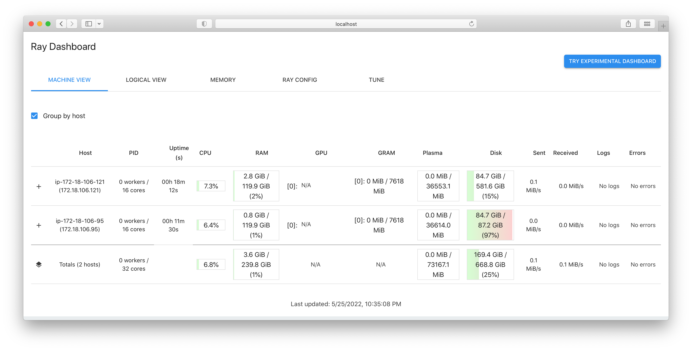

Running TSP on AWS
This page details the process of running TSP example from graphenv library on Ray clusters deployed on AWS cloud. The deployment relies on a working configuration in the example-tsp.yml file provided by this library and follows the steps decribed at Ray Tutorial for Cloud Installations.
Getting Started
Install Ray on your workstation; follow the steps described at Ray Installation Manual. This workstation will be the environment from which you will interact with the Ray clusters throughout the rest of the process described on this page.
For installation using
pip, you might want to try:pip install -U rayClone
graphenvlibrary’s code and navigate to the directory with the Ray cluster configuration file:git clone https://github.com/NREL/graph-env.git cd graph-env/devtools/aws/
Deploy Ray cluster
Ray will handle the deployment according to the settings chosen inside example-tsp.yml. The version distributed with the library’s code launches 2 instances on AWS: 1 head node and 1 worker node; both are of the type: g3.4xlarge, which includes 1 GPU per instance.
Following the commands listed above, run:
ray up example-tsp.yml --no-config-cache
This command may ask you to confirm that you desire to launch a cluster; type y and press Return to proceed.
This command will trigger provisioning instances in AWS, launching Docker containers with Ray inside those instances, and performing a number of customizations described in the configuration file. The entire process may take up to 15 minutes.
When the deployment is complete, you should see the output that ends with the block titled: “Useful commands”.
Connecting to head node
You do not need to copy & paste IP addresses from the output of the previous command. Instead, you can run the following command:
ray attach example-tsp.yml --no-config-cache
It will query the cloud, get the details of the currently running cluster, and give you shell on the head node (notice the prompt in your terminal changing to something like: (base) ray@ip-123...456)
There, you can run:
ray status
and the output should include:
Healthy:
1 ray.worker.default
1 ray.head.default
Running TSP example:
On the head node (see previous step), run:
python graph-env/experiments/tsp/run_tsp_aws.py --N=40 --use-gnn --run=PPO --lr=0.001 --entropy-coeff=0.01 --seed=0 --num-workers=31 --num-gpus=1 --stop-iters=1000000 --stop-timesteps=100000000 --log-level=DEBUG
For more detailed examples of running TSP and available command-line options, refer to ToDo: Add Link
Monitor the load through Ray dashboard
In a separate terminal, navigate to the same directory where you ran ray up... and ray attach... above and run:
ray dashboard example-tsp.yml --no-config-cache
Keep this process running (and terminal open), and navigate in your browser to: localhost:8265. You should see a dashboard similar to this:

The dashboard should show current CPU loads, memory usage, GPU usage, etc.
Destroy Ray cluster (free up cloud resources)
To terminate cloud instances, run:
ray down example-tsp.yml
This is an important step. Without it, AWS will continue charging for the allocated resources.